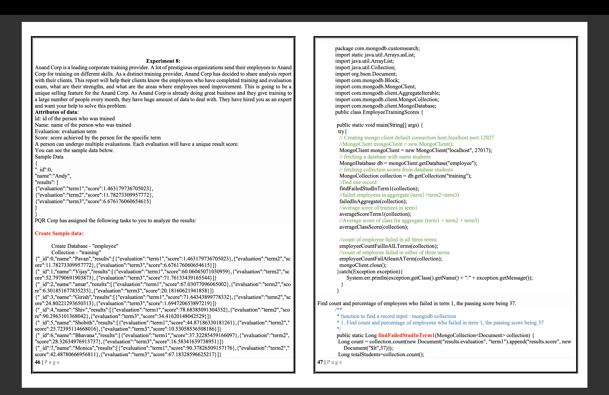
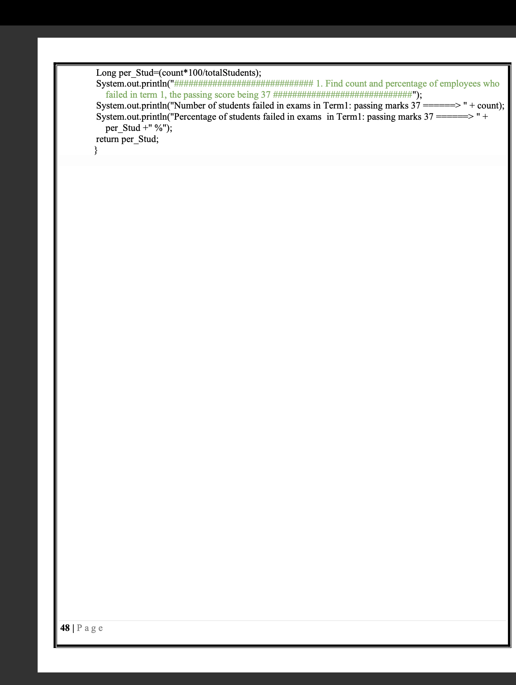

exp 8


code
import com.mongodb.*;
import com.mongodb.client.*;
import com.mongodb.client.model.Filters;
import com.mongodb.client.model.UpdateOptions;
import com.mongodb.client.result.*;
import org.bson.Document;
import org.bson.types.ObjectId;
import java.util.*;
import java.util.Arrays;
import static com.mongodb.client.model.Filters.*;
import static com.mongodb.client.model.Updates.*;
public class Main {
public static void main(String[] args) {
try {
MongoClient client = MongoClients.create("mongodb://localhost:27017");
MongoDatabase db = client.getDatabase("employee");
MongoCollection collection = db.getCollection("training");
findFailedStudInTerm1(collection);
// client.close();
} catch (Exception exception) {
System.err.println(exception.getClass().getName() + ":" + exception.getMessage());
}
}
public static Long findFailedStudInTerm1(MongoCollection collection) {
Long count = collection.countDocuments(new Document("results.evaluation", "term1").append("results.score", new Document("$lt",37)));
Long totalStudents=collection.countDocuments();
Long per_Stud=(count*100/totalStudents);
System.out.println("############################# 1. Find count and percentage of employees who failed in term 1, the passing score being 37 #############################");
System.out.println("Number of students failed in exams in Term1: passing marks 37 ======> " + count);
System.out.println("Percentage of students failed in exams in Term1: passing marks 37 ======> " + per_Stud +" %");
return per_Stud;
}
}